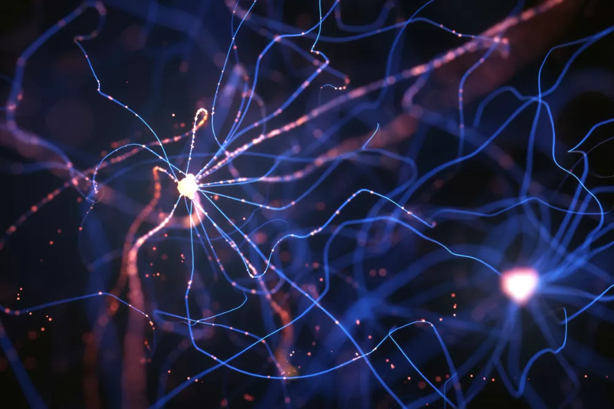
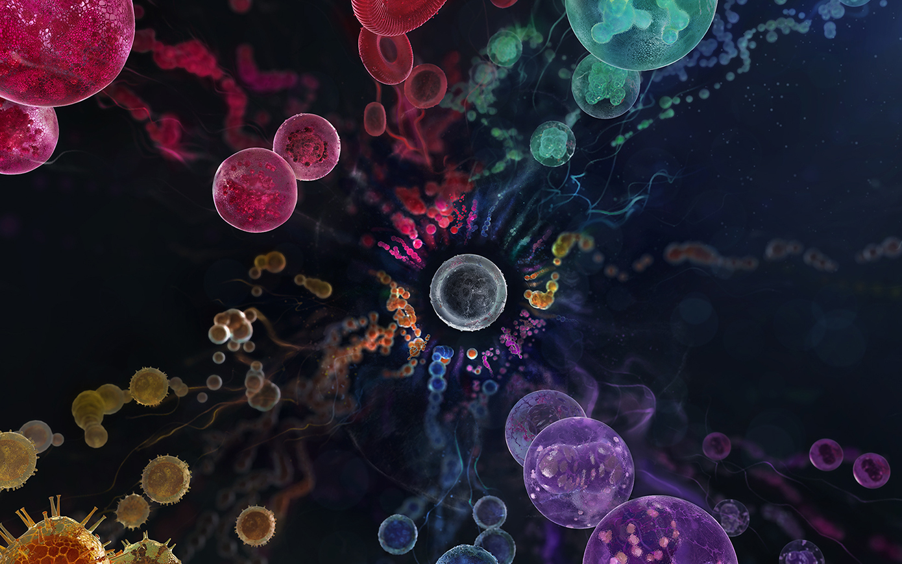
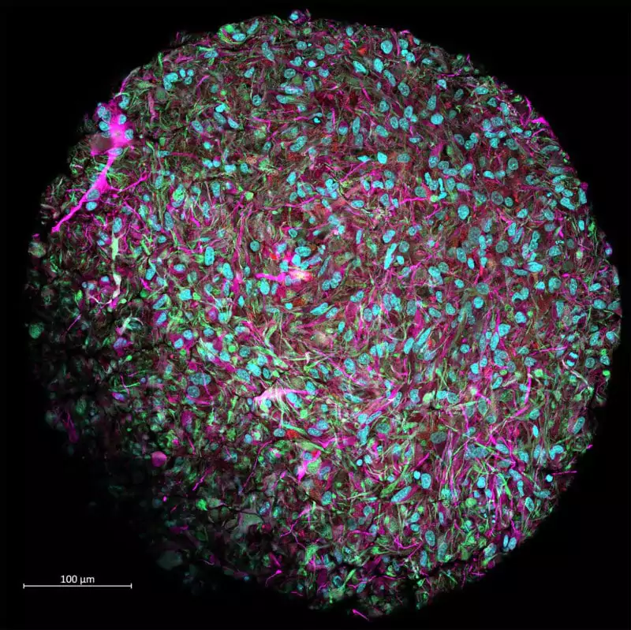

Компьютер - организм
Биокомпьютер (также биологический компьютер, молекулярный компьютер) — компьютер, который функционирует как живой организм или содержит биологические компоненты. Создание биокомпьютеров основывается на направлении молекулярных вычислений. В качестве вычислительных элементов используются белки и нуклеиновые кислоты, реагирующие друг с другом.

ДНК-компьютер
ДНК-компьютер — вычислительная система, использующая кодирование данных последовательностями молекул ДНК и применяющая к ним технологии молекулярной биологии для выполнения вычислительных операций.
В 2002 году исследователи представили программируемую молекулярную вычислительную машину, состоящую из ферментов и молекул ДНК. >28 апреля 2004 года создали ДНК-компьютер с модулем ввода-вывода данных. В январе 2013 года исследователи смогли записать в ДНК-коде несколько фотографий JPEG, набор шекспировских сонетов и звуковой файл. В марте 2013 года исследователи создали транскриптор (биологический транзистор). В 2019 создали на основе ДНК вычислительную систему, способную извлекать квадратные корни из 10-битных чисел.

Принцип работы
Нити ДНК имеют в своём составе четыре азотистых основания: цитозин, гуанин, аденин, тимин. Их последовательность кодирует информацию. С помощью ферментов эту информацию можно изменять: полимеразы достраивают цепочки ДНК, а нуклеазы их разрезают и укорачивают. Некоторые ферменты способны разрезать и соединять цепи ДНК в местах, указываемых другими ферментами — лигазами. Таким образом, ДНК-компьютеры могут хранить и обрабатывать информацию. Также, химические реакции на разных частях молекул проходят независимо, параллельно, что обеспечивает высокую скорость вычислений.
Клеточные компьютеры
В ДНК можно записывать информацию с плотностью 2,2 петабайта на грамм. ДНК — компактный контейнер с плотностью записи в тысячи раз больше, чем у существующих носителей. Но есть и другие виды биокомпьютеров.

Другим направлением развития биокомпьютеров является создание клеточных компьютеров. Для этой цели идеально подошли бы бактерии, если бы в их геном удалось включить некую логическую схему, которая могла бы активизироваться в присутствии определенного вещества. Такие компьютеры очень дешевы в производстве: им не нужна столь стерильная атмосфера, как при производстве полупроводников. Единожды запрограммировав клетку, можно легко и быстро вырастить тысячи клеток с такой же программой.
Мини-мозг
Хотя искусственный интеллект иногда обладает впечатляющими возможностями, человеческий мозг остается непревзойденным. Он способен выполнять несколько задач одновременно, лучше принимает сложные логические решения и требует гораздо меньше энергии, чем алгоритмы машинного обучения. Чтобы преодолеть эти различия, исследователи пытаются создать "биокомпьютеры" на основе органоидов мозга.
Используя клетки кожи человека, перепрограммированные в стволовые клетки, а затем в клетки мозга, исследователи смогли создать первые функциональные "мини-мозги" в 2012 году. Каждый органоид содержит от 30 000 до 50 000 клеток. Теперь они планируют построить компьютер на основе этих органоидов, чтобы использовать всю вычислительную мощь человеческого мозга. Биокомпьютер, работающий на клетках человеческого мозга, экспоненциально расширит возможности современных вычислений. В частности, он сможет обрабатывать сложные вычисления быстрее, чем человеческий мозг, но с гораздо меньшим потреблением энергии.

Объем памяти каждого мозга оценивается в 2500 ТБ, в нем насчитывается от 86 до 100 миллиардов нейронов. Суперкомпьютер "Frontier" в июне 2022 года со скоростью обработки 1,1 exaflops он стал самым быстрым суперкомпьютером в мире, впервые превысив вычислительные возможности человеческого мозга (производительность которого оценивается примерно в 1 exaflops), потребляя в миллион раз больше энергии (21 МВт против 10-20 Вт).
Проблемы
В разработке биокомпьютеров ученые столкнулись с целым рядом серьезных проблем. Первая связана со считыванием результата – современные способы секвенирования (определения кодирующей последовательности) не совершенны: нельзя за один раз секвенировать цепочки длиной хотя бы в несколько тысяч оснований. Кроме того, это весьма дорогостоящая, сложная и трудоемкая операция. Вторая проблема – ошибки в вычислениях. Для биологов точность в 1% при синтезе и секвенировании оснований считается очень хорошей. Для ИТ она неприемлема: решения задачи могут потеряться, когда молекулы просто прилипают к стенкам сосудов; нет гарантий, что не возникнут точечные мутации в ДНК, и т. п. ДНК с течением времени распадаются, и результаты вычислений исчезают на глазах.